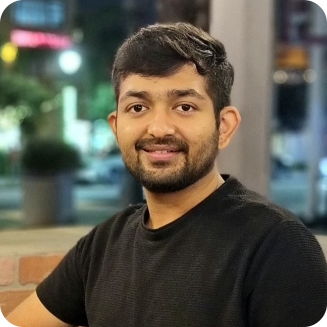
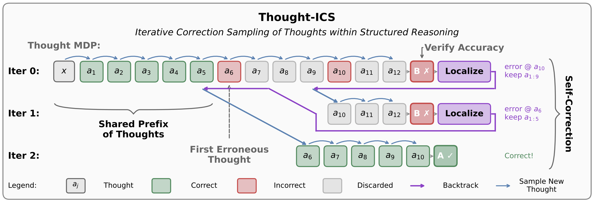
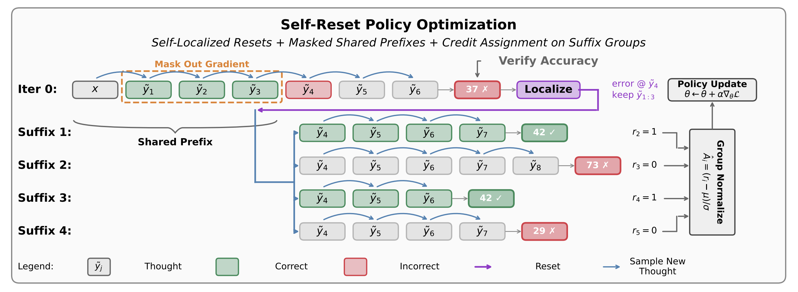
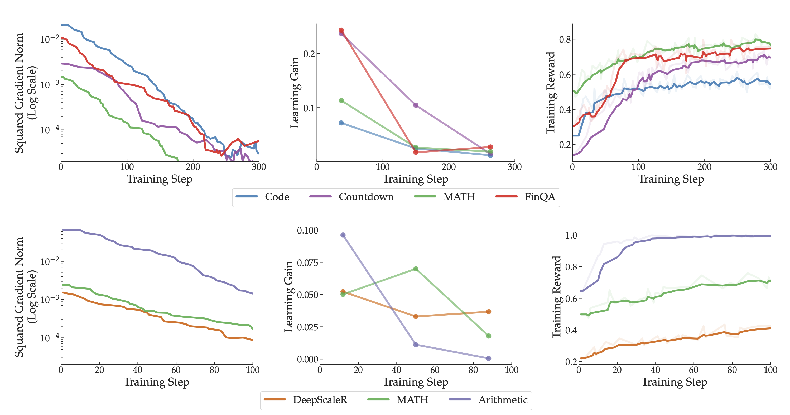
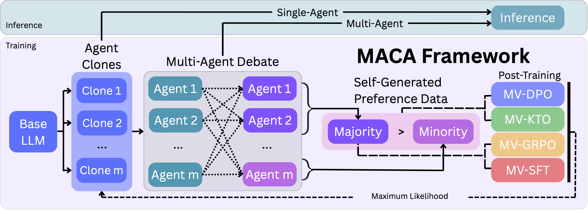
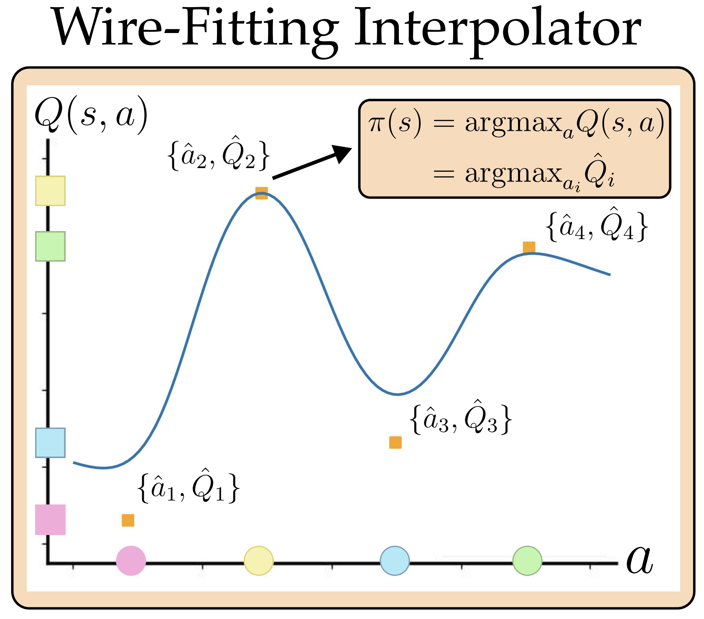
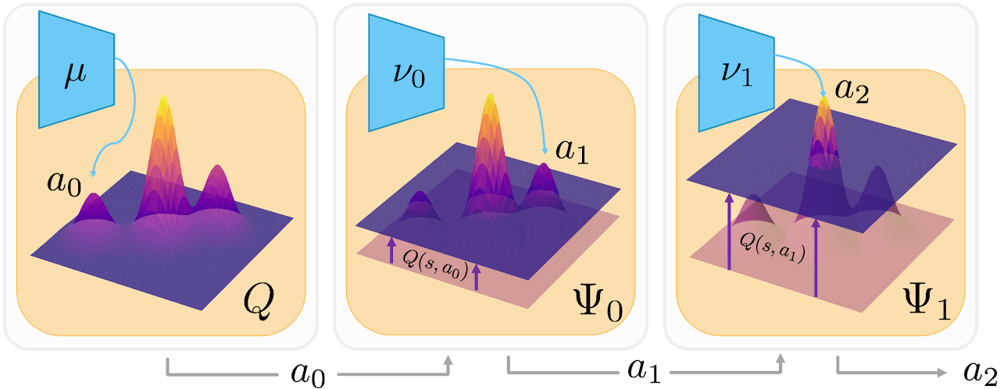
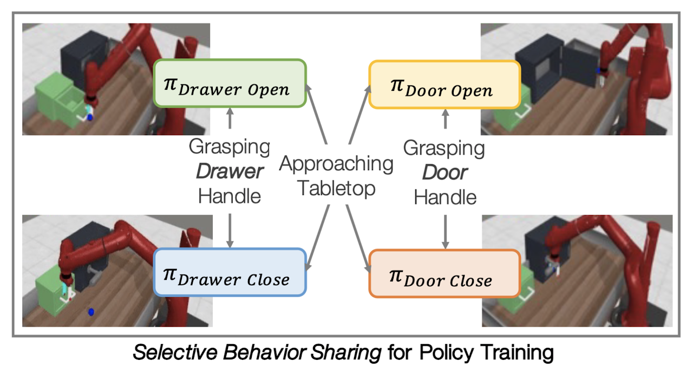
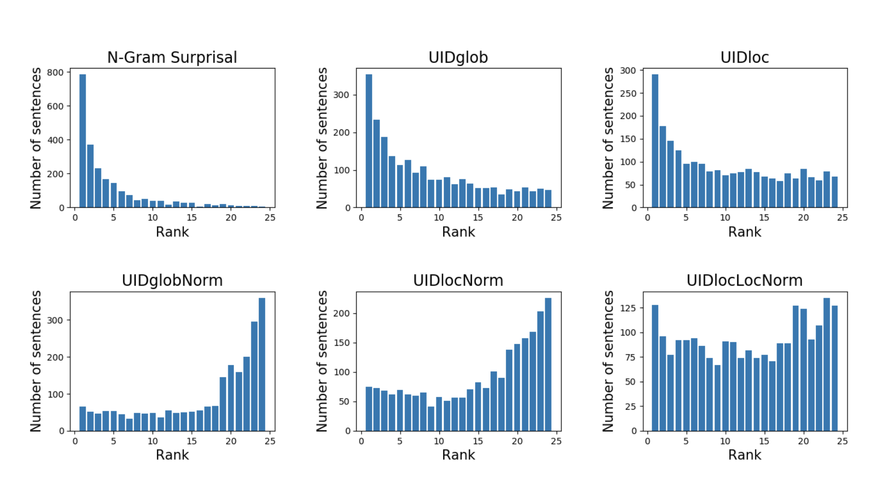

Ayush Jain
I am a Research Scientist at Meta
 in the Applied Reinforcement Learning team. I build RL algorithms for agents that act under
complex action spaces across recommender systems, robotics, and language models.
in the Applied Reinforcement Learning team. I build RL algorithms for agents that act under
complex action spaces across recommender systems, robotics, and language models.
I completed my PhD at USC with Prof. Joseph J. Lim and Prof. Erdem Bıyık. I have worked or interned at Meta Reality Labs, Microsoft Research Montreal, Naver AI, and Samsung Research Korea. I received my undergraduate degree from IIT Delhi.

Research

We show that language models can explicitly self-localize errors in incorrect reasoning when it is structured as discrete, semantically coherent thought steps.
We propose an inverse RL method for learning from constrained demonstrators and finding shorter trajectories to the goal.

We propose reset-based policy optimization methods that improve credit assignment in multi-step language model reasoning by resampling continuations from intermediate reasoning states.

Certain tasks produce much larger gradients during RL post-training of multi-task language models, biasing model updates without translating to greater learning gains.

Language models improve by reinforcing their own debate consensus across diverse reasoning paths.

Actor-free Q-learning in continuous action spaces by learning a wire-fitted Q-function.

We identify that TD3 gets stuck in local optima in tasks with complex Q-functions and propose a new actor architecture to find better optima.

We introduce behavior-sharing for efficient multitask reinforcement learning, complementary with parameter-sharing and data-sharing.
For optimal decision-making under a varying action space, we learn relations between available actions using a graph-attention policy architecture.
Our RL framework enables agents to solve sequential decision-making tasks even when available actions have not been seen before.

This work investigates the extent to which word order choices in Hindi are influenced by the drive to minimize information variance in a sentence.
Teaching
Teaching Assistant (USC): Deep Learning and its Applications (CSCI566, CSCI599)
- Fall 2024: Prof. Yan Liu
- Spring 2024: Prof. Yue Zhao
- Spring 2023: Prof. Jesse Thomason
- Fall 2020: Prof. Joseph J Lim
- Spring 2019: Prof. Joseph J Lim
- Fall 2019: Prof. Joseph J Lim
Reviewing
- ICLR: 2023, 2024, 2025, 2026
- NeurIPS: 2023, 2024, 2025, 2026
- ICML: 2025, 2026
- RLC: 2025, 2026
- CoRL: 2021, 2022, 2023, 2024
- AAAI: 2026